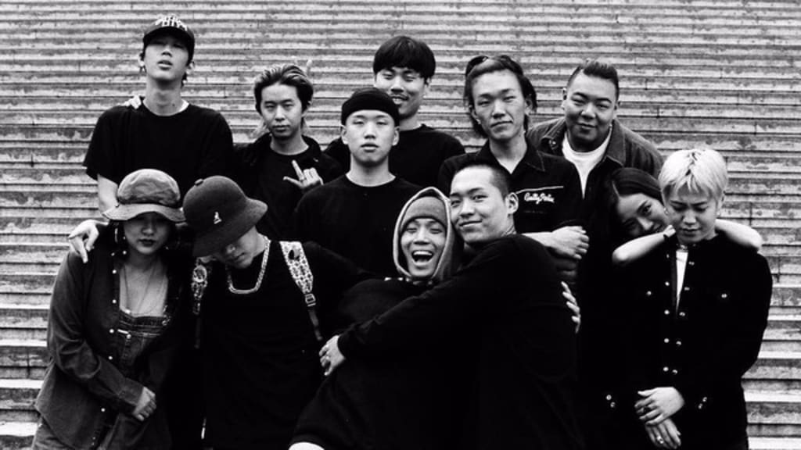
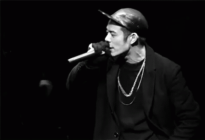
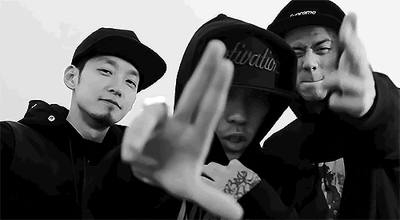

La popularidad del K-pop sigue en constante crecimiento, lo cual ha influido en que los seguidores de la cultura coreana se interesen en otros géneros musicales aparte del pop. Tal es el caso del K-hip hop y el K-R&B, una escena menos comercial, que, con el tiempo, ha adquirido un mayor reconocimiento y continúa popularizándose tanto en el mercado nacional como en el internacional. A día de hoy cuesta hablar de música coreana y no hablar de hip-hop. No solo por la fuerte industria musical que tienen bajo este género musical, si no que su introducción en el país fue el que dio origen a lo que hoy conocemos como K-pop.Actualmente hay una incontable lista de famosos activos en la escena Hip-Hop: Jay Park, Jessi, Sik-k, Simon Dominic..
El Rhythm and Blues, mejor conocido como R&B, es un género que surgió a finales de la década de los 30, como un tipo de música popular afroamericana derivada del jazz, el góspel y el blues. En los años 80 llegó un R&B completamente transformado bajo la influencia de la música disco. Para los años 90 se comercializó, tomando la forma de un "Rhythm" and Blues contemporáneo, el cual va de la mano con el rap. Incluso, puede resultar difícil encontrar canciones de R&B sin toques de rap y viceversa. A diferencia del R&B, el hip hop fue originado entre comunidades afroamericanas y latinoamericanas en los Estados Unidos a finales de los años 60, y se caracteriza por unificar cuatro elementos, a saber: el MCing (rapping), el DJing (turntablism), el breakdancing (bboying) y del graffiti.
En cuanto al hip hop coreano, también conocido como "K-hip hop", principalmente se reconoce como un término que engloba casi en su totalidad el rap coreano. Se originó como respuesta a la terminación del régimen militar autoritario en Corea, la relajación de la censura estatal de la músic a popular a fines de la década de los 80 y la llegada de los Juegos Olímpicos de Seúl en 1988, que trajeron consigo estilos musicales globales como el rap y el Rhythm and Blues, a través de la diáspora coreana. Para 1989, la canción "Kim Sat-gat" del músico Hong Seo-beom, se acreditó como la primera canción pop en contener rap, y en 1990, Hyun Jin-young, un rapero que debutó con el álbum "New Dance" fue considerado como el primer artista de K-hip hop 
A diferencia del hip-hop afroamericano, el coreano comenzó en salas y servidores web de fanáticos del hip hop. Esta etapa inicial estaba vinculada a comunidades creadas en servidores como Naver que proporcionaban foros, servicios de mensajería y correos electrónicos gratuitos. Otras comunidades se produjeron en servidores como BLEX y Show N Prove que funcionaban para compartir traducciones en coreano de letras en inglés, por medio de las cuales intercambiaban cintas de cassette y CD importados. Además, también discutían temas de interés relacionados con el hip hop. Artistas considerados de la primera generación como Verbal Jint, P-Type, Defconn y Garion participaron activamente en estas comunidades virtuales que posteriormente se trasladaron a las calles y clubes. Las comunidades disminuyeron cuando la gente dejó de usar dichos servidores web a principios de los 2000, trasladándose a las revistas y los sitios en línea. Estos webzines publicaban artículos y facilitaban la comunicación en la industria del Hip Hop. Muchos de sus usuarios comenzaron a celebrar reuniones mensuales de manera presencial para discutir la música e interpretar sus creaciones, lo que llevó al desarrollo de las escenas locales. A la derecha se muestra un hilo que recorre la trayectoria del desarrollo del Hallyu. Durante los primeros años de 1990 las compañías Samsung y Hyundai se estaban expandiendo rápidamente en el mercado global, y en esos momentos la película Jurassic Park de Steven Spielberg se convirtió en un fenómeno mundial que recaudó millones de dólares. Esto llevó al gobierno coreano a darse cuenta de que la cultura podía ser lucrativa e incluso más rentable que los automóviles y semiconductores y, decidieron imitar el modelo de producción de Hollywood.

Este video es de una cancion llamada "Eung freestyle", una colaboración de DPR Live con Punchnello, Owen Ovadoz, Sik-K y Flowsik, en la que se hizo uso de instrumentos coreanos, principalmente gayageum (instrumento tradicional coreano compuesto por doce cuerdas), atrajo una gran popularidad a nivel mundial después de su lanzamiento en la plataforma de YouTube en abril del 2016. Algunos de los sitios en línea como Hiphop Playa, Rhythmer y HiphopLE aún se utilizan como una comunidad en línea, principalmente en redes sociales como Instagram; incluso en el 2017 los festivales HiphopLE e Hiphopplaya presentaron los primeros premios de Korean Hip Hop Awards, que hasta la fecha siguen vigentes. Desde mediados de los años 90, Hongdae se convirtió en el centro físico de la escena coreana, y se considera el lugar de nacimiento del hip hop coreano clandestino. Era un lugar para consumir, interpretar y compartir música. Actualmente, a nivel internacional es un sitio muy popular para el turismo debido a que es conocido por el arte urbano y la música independiente que se puede encontrar en tiendas locales y clubes.
Aunque el K-hip hop adoptó el Hip Hop como un género musical, los contextos sociales eran completamente distintos. La diferencia cultural entre Estados Unidos y Corea llevó a la divergencia en sus líricas, ya que no podían hablar de los mismos temas porque las vivencias eran totalmente diferentes. En sus inicios, los raperos coreanos hacían referencia a los valores y modismos confucianos, y los principales temas que se trataban eran las historias personales que se reflejan en el estilo underground, historias de amor en el caso del mainstream, o temas de la vida cotidiana. En cuanto a las diferencias del sonido, se consideraron pequeñas como para distinguir el hip hop coreano del estadounidense. Muchos artistas se han esforzado para incorporar sonidos tradicionales de Corea, tal es el caso de Seo Taiji and Boys que agregó a su canción "Hayeoga" una interpretación en solitario del oboe cónico tradicional coreano. También, se encuentra OneSun, un músico de la primera generación, que es conocido por sus experimentos cruzados entre el hip hop y la música tradicional coreana.